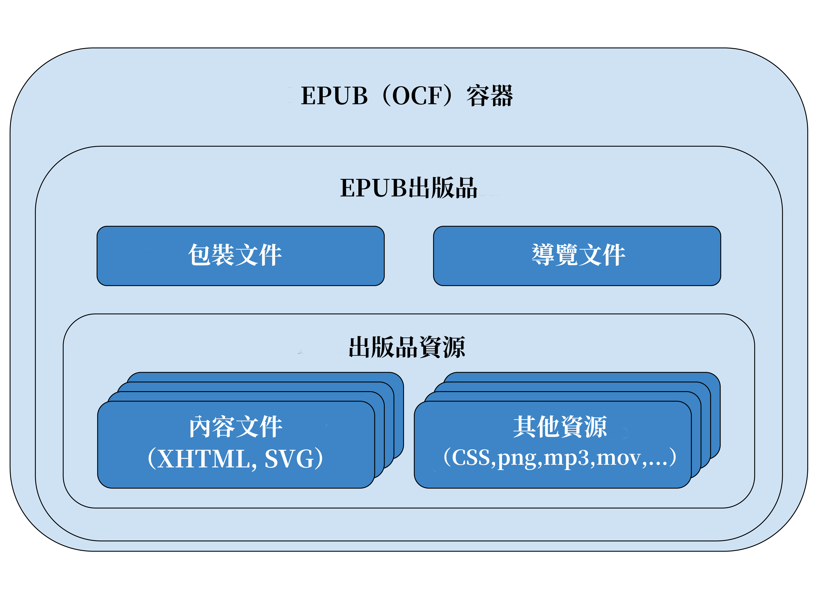

EPUB 3格式透過利用開放Web平台的各種特色與機能，讓出版者能以此打造先進的閱讀體驗。格式使用HTML、SVG、CSS以及JavaScript，不僅能提供豐富且具互動性的閱讀體驗，也能製作各種語言的內容，無論預設的書寫方式為橫排還是直排。EPUB出版品選擇使用這樣的技術，也使其在產製時即具備無障礙輔助能力，以符合廣範圍的使用者需求。
本總覽以較高的層次來發掘EPUB 3於製作上能夠提供功能的各項特色。本文件不試圖成為製作EPUB出版品的教學指南，也不對該格式的技術細節，或閱讀系統如何運作作深入探討。相對之下，本文件目的為提供給更一般的讀者，讓他們能探索並理解使用EPUB 3格式製作數位出版品的優點，而無需閱讀整份技術規格。
然而，在直接進入這些特色之前，最好能夠先具備對EPUB出版品架構的基本概念認識。一個EPUB檔案就是一個有效的ZIP檔案，提供識別使用的後設資料，讓閱讀系統得以識別並且用於處理出版品（ZIP檔案在規格中稱為EPUB容器）。
此處理程序中的關鍵檔案稱為包裝文件。提供關於出版品的後設資料、列出所有資源，並且指定EPUB內容文件（即為XHTML和SVG文件，處理後用來提供內容）的呈現先後順序。
另一個關鍵檔案為EPUB導覽文件。此文件內有該出版品的目次，同時也可以包含其他出版者所定義的導覽輔助（例如一份頁面列表或者地標列表）。
以下圖片讓一本EPUB出版品的結構以視覺化呈現：

圖片說明
「EPUB(OCF)容器」作為最外層的元件封裝整個「EPUB出版品」，其中包含兩份文件「包裝文件」以及「導覽文件」還有一個名為「出版品資源」的元件，其中包含多個「內容文件」（XHTML, SVG)，以及多個「其他資源」（CSS, png, mp3, mov等）。
本文件內文提供了各種資源連結到的細節，以能達成進一步理解EPUB 3出版品中各項功能的目標。
若對本文件所提供一般性導論不滿足，想要進一步獲得更多資訊。EPUB 3.3規格 [epub-33] 包含了製作上所必要的資訊。
在EPUB 3.3之前的版本，閱讀EPUB 3規格可能是種挑戰。該格式被切割為多份文件，同時每一份文件中內容製作與閱讀系統的需求散亂混雜。隨著EPUB 3.3版發布，已經整合成一份文件。
此外，EPUB出版品的無障礙輔助性需求，則在EPUB無障礙輔助性規格 [epub-a11y-11] 中進行說明。像EPUB 3這樣的數位格式所能提供的最大優勢，其中之一就是能打破印刷內容的無障礙壁壘。只要在製作時注意無障礙需求，出版品就能讓有著多樣需求的使用者都能夠閱讀。
同時透過閱讀系統規格 [epub-rs-33] 則有助於理解處理內容的程序，以及程序的技術細節。這些資訊對製作內容而言，並非必要。
對於新接觸EPUB的人，一開始都會對「EPUB 3」格式與EPUB 3規格的版本編號感到困惑。最新版本的EPUB 3由EPUB 3.3規格 [epub-33] 所定義。該規格後的小數（「.3」）用來與下一個發布版作為區分，並非每個發布版都代表新的格式。
維護EPUB 3的W3C工作小組致力於不讓按照早先版本規格製作的內容失效，舉個例子，基於EPUB 3.0規格製作的EPUB 3出版品，應該也能合乎EPUB 3.3版的需求。
這也是為什麼本總覽的名稱為「EPUB 3」，主要因為每份規格的發布版與下一版一般來說不會相差太多。
一本EPUB出版品，會以單一檔案（即為一份「可攜式文件」）的方式被傳送以及交換，其中含有包裝文件（可能不只一份），EPUB內容文件，以及其他在處理出版品上所必需的資源。供EPUB使用的單一檔案容器基於廣受採用的ZIP格式，以及一份XML文件用來識別包裝文件位置，利用預先定義封裝中位置的方式，來指定ZIP封裝中出版品所在。
這種方式，在EPUB出版品的製作者以及任何使用EPUB出版品的系統間，提供了清楚的協定，同時在網路傳輸或者特定檔案系統間提供了可靠的表述方式
這也使得EPUB出版品能夠以廣泛易於取得的ZIP工具來製作或者編輯。出版者可彈性運用市售的編輯應用程式，或者建構自己的內容轉換流程來製作
若想了解更多關於一本EPUB出版品以單一容器檔案呈現的資訊，請參考 [epub-33] 中的開放容器格式（Open Container Format, OFC）章節。
每一本EPUB出版品都由一份包裝文件作為代表。包裝文件指定了所有必需的資源供處理內容呈現使用。包裝文件也定義了線性閱讀時的閱讀順序，並且連結後設資料以及導覽資訊。
包裝文件在一般網站的傳統架構之上，定義了一個層級，以便於製作數位出版品。舉網站為例，若在內容中嵌入參照資料作為其資源使用，最簡單且具彈性的手段就是指向資源，但卻不易列舉所有處理內容所必需的資源。此外，也沒有標準的方式來定義網站中各頁面的順序來建構為一個大型出版品，這也就是EPUB書脊（spine）元素 [epub-33] 的目的（也就是提供外部宣告式的手段來明確指出如何為一組文件集合排出順序）。
包裝文件也提供了表述適用於整體內容之後設資料的標準方式。每一份包裝文件都包含一個後設資料區塊[epub-33] 以提供該EPUB出版品的一般性資訊，可讓書名、作者、識別碼以及其他資訊能夠被輕易取得，並且呈現予使用者。也提供了使用link元素添加完整書目記錄的方式 [epub-33] 。
包裝文件也允許使用unique-identifier屬性[epub-33] 來為EPUB出版品建立唯一識別碼。此識別碼讓出版者能用來分辨出版品，甚至用於區分不同版本。
若想了解更多關於包裝文件的資訊，請參考 [epub-33] 中的包裝文件章節。
EPUB的核心概念為：一本EPUB出版品包含多重資源，可以被個人或者程式以一些特定的順序完整導覽並且消費使用。
許多類別的出版品有著顯而易見的閱讀順序，或者在內容中有著邏輯進程。小說就是一種高度序列化文件的範例──它一般來說有著開頭、中間與結尾──但並非所有的出版品都這麼整然有序：食譜或攝影作品集可能更像是一個資料庫。然而所有的文件都應該至少有一個邏輯順序，供所有最高層級的內容物件排序，無論是按照日期、主題、位置或者其他的分類法（例如，食譜一般會按照烹飪方法來分類）。
每一本EPUB出版品都至少需要在其書脊中定義一組這樣的邏輯順序，來排列所有最高層級內容。也可以在EPUB導覽文件[epub-33] 中定義一組描述性的目次。EPUB出版品使這些資料結構在內容外部，可以透過機器可讀取的方式取得，使便於被發現和使用。
EPUB出版品不限制以線性方式對內容排序，也不排除以任意的方式做連結──就像網頁一樣，EPUB出版品基於超文本建構──但可以透過此方式確實做到最基本的使用和導覽，HTML網頁就沒有這樣的方法。
每一本EPUB出版品都包含一份特別的XHTML內容文件，稱為EPUB導覽文件。此文件使用 [html] 的nav元素來定義人類和機器都可讀取的導覽資訊。所有的閱讀系統都可利用EPUB導覽文件來對使用者呈現目次。
EPUB導覽文件對所有使用者提供最低限度的無障礙輔助以及導覽協助，以及提供增強導覽的功能。其中最重要的為國際化支援（舉個例子，EPUB導覽文件本身作為XHTML文件，原生支援Ruby註解）並且支援嵌入語法（在導覽連接中可以包含MathML以及SVG）。
儘管不強制要求EPUB閱讀系統在處理資料建立自己的目次時，需支援這些先進的文字格式功能，但EPUB導覽文件可分飾兩角，這些功能依然可以對預期的讀者產生用途。出版者可以將EPUB導覽文件包含在書脊中 [epub-33] （也就是作為出版品內容的一頁），這麼一來使用者就可以直接存取完整的HTML。
在EPUB出版品的內文中包含EPUB導覽文件，也可以讓出版者為使用者以及閱讀系統安排不同的呈現。例如，一份結構複雜的文件，可能就不會想把完整的目次展現在出版品內文中給使用者看。在這案例中，顯示層級可以使用hidden屬性[epub-33] 來進行調整。這項屬性會被閱讀系統在書脊外處理目次時所忽略（也就是以自己特化的介面展示），可以避免能用於增進整體無障礙輔助性的資訊被縮減。
出版者也能提供額外的nav元素，當EPUB出版品包含非結構化興趣點，像是分頁、地標、圖片、表格等時，能更進一步強化對內容的存取。
若想了解更多關於EPUB導覽文件結構與語意的資訊，請參考 [epub-33] 中的EPUB導覽文件章節。
每一本EPUB出版品都包含一或多份EPUB內容文件，如EPUB內容文件[epub-33] 所定義。這些XHTML或SVG文件用來描述可供閱讀的內容，以及參照相關的媒體資源（例如，影像、聲音檔以及影片片段）。
XHTML內容文件由 [html] 中的一項子集所定義。
EPUB的核心概念就是內容呈現可由讀者調整成適合的樣貌，而不是讀者非得去配合特定的內容呈現形式。HTML一開始就被設計成能夠支援結構化內容的動態排版，然而HTML在網頁瀏覽器中的支援越來越集中於網頁應用程式的需求上，同時許多熱門的網站現在的版面也越來越不具彈性。
EPUB出版品被設計為能對視覺障礙者提供最大化無障礙輔助性，閱讀系統一般會即時處理文字行列版面以及分頁，以適應顯示區域的尺寸、使用者偏好的文字尺寸和其他環境要素。但EPUB不能保證這項行為；像是包含影像、向量圖像、影片以及其他無法被重排的內容，以及一些閱讀系統可能不會即時分頁或者完全不分頁。然而，支援動態適應性版面以及無障礙輔助性一向是EPUB標準長期演化的主要設計考量。
EPUB內容文件可以配合CSS樣式表，讓出版者可以定義想要的排版設計。EPUB 3所支援的CSS定義於 [csssnapshot] 。
EPUB 3也支援直排與橫排的CSS樣式，以及由左到右和由右到左的書寫方式。
EPUB 3支援兩種彼此緊密相關的字型格式──OpenType [opentype] 與WOFF [woff] [woff2] ──以相容傳統出版的工作流程以及日益興起以網頁為基礎的工作流程。例如，使用文字處理軟體製作EPUB出版品時，可能只會存取已經安裝的OpenType字型集合，然而將網頁封存成EPUB的產生器，則可能只會存取WOFF資源（該檔案在抽離WOFF後設資料的狀況下，無法被轉換成OpenType，通常也不希望被在沒有授權的狀況下被轉換）。
EPUB 3也同時支援一般與模糊化的字型，不分OpenType與WOFF字型格式。對模糊化字型資源的支援，許多商售字型的授權限制需要此項功能，請參考 [epub-33]字型模糊化以獲得更多資訊。
EPUB力求以宣告式的方式處理內容──資料可以被更動，但不該像可執行的程式──卻依然支援腳本，如 [html] 及 [svg] 所定義。這讓出版者可以建立、添加動態內容，如問答、互動遊戲，以此類推。
然而，在EPUB出版品中的腳本需要面對與在網頁瀏覽器中執行腳本不同的安全性考量。例如具代表性的同源政策（same-origin policies）並不適用於下載到使用者端系統的內容。基於這些原因，最好在對使用者經驗而言有必要的狀況下才使用腳本，但這麼做也會增加讓內容無法在所有閱讀系統間互通，不具備可攜性的可能，也會製造對無障礙輔助性的隔閡，影響內容再利用的可能。
也必須注意，EPUB 3並不要求閱讀系統一定要支援腳本，所以可能會因安全性考量而不支援。出版者需要思考當腳本對內容而言為必要，自己的出版品遇到不支援的狀況時，能如何被使用者閱讀。
請參考 [epub-33] 的腳本以獲得更多與腳本相容性相關的資訊。
EPUB的一大主要目標就是增進內容的無障礙輔助性，所以多項EPUB 3功能都支援此需求。更進一步說明，EPUB無障礙輔助性規格 [epub-a11y-11] 提供了用於評估EPUB出版品無障礙輔助性的框架。其完成了延伸網頁內容無障礙指引（Web Content Accessibility Guidelines, WCAG [wcag21] ）的工作，該份指引為全球認同的內容無障礙標準。
該規格定義了產製能被更廣範圍的使用者存取的EPUB出版品之需求。也伴隨著一份技術文件 [epub-a11y-tech-11] 以描述達成這些需求的最佳實踐。
值得注意的是，無障礙輔助性自身固然重要，但具備無障礙輔助能力的內容更有價值：一本具無障礙輔助性的EPUB出版品可以應用於更多的設備，並且容易再利用，無論整體或者其中一部分，無論透過手工還是自動化的工作流程。
一些EPUB 3的特殊內容功能可以用於製作高度具無障礙輔助的內容，包括：
- HTML語意標記
-
與EPUB 2相較，EPUB 3所支援版本的HTML加入了一系列新元素，可以讓標記更具備語意上的意義。舉例而言，包括 [html] 的section、nav、以及aside元素。這些額外元素可以讓內容在分類與定義上更加完整，可助於表達文件結構，便於邏輯導覽。
- HTML多媒體元素
-
[html] 的audio及video元素提供了內建的控制項，並且能與輔助技術通用。這些新元素讓使用者可以直接控制播放，不再需要依靠透過無障礙支援做得很糟的插件了。
- 可重排的版面
-
EPUB出版品預設透過重排以符合可使用的螢幕空間。這讓使用者可以調整他們想要的顯示方式（例如，調大字型尺寸、行距以及字距）而不會讓出版品變得無法閱讀──調整尺寸後的內容自身會重新在可用的空間中排列。
- ARIA支援
-
EPUB在XHTML及SVG內容文件中支援對ARIA角色（roles）、狀態（states）以及特性的表述。這些屬性可以讓出版者提升腳本控制以及元件的無障礙輔助性。
EPUB 3隨著網頁採用新的功能與技術而持續進化。本規格列舉一系列的網頁標準作為參照，當他們改版時，自動生效並可使用。例如HTML現在被稱為「活的標準（Living Standard）」主要是因為新功能只要有兩組實作，就會被立即加入。EPUB 3參照的SVG [svg] 、JavaScript [ecmascript] 以及Unicode [unicode] 也是一推出新版本就立即受到採用，而CSS則請參考最新的快照 [csssnapshot] 資料。
這意味著當這些標準加入新功能的同時，這些功能也立即合乎EPUB 3規格，可以用於EPUB 出版品。（這不意味這些功能立即就能使用，主要是閱讀系統通常需要較長的時間來實作支援，同時銷售方可能不見得一直希望這些新功能來挑戰他們既有的驗證規則）。
EPUB工作小組也會持續介紹這些在核心規格群之外的新實驗性功能。這是一項代表性的作為，因為這些功能通常在真實世界的閱讀系統尚未支援，而工作小組會在將技術標準化之前，尋求實作上的回覆。
目前就有兩個這樣的實現性功能：多重內容釋義出版品 [epub-multi-rend-11] 以及文字轉換語音增強機制 [epub-tts-10] 。出版者可以在自己的出版品中使用這樣的功能，但必須要意識到，這些功能僅受到有限度的支援。
EPUB奠基於名為開放電子書出版品架構（Open EBook Publication Structure,OEBPS）的交換格式。OEBPS 1.0於1999年由開放電子書論壇（Open eBook Forum）所通過，該組織後來改組為為國際數位出版論壇（International Digital Publishing Forum, IDPF）。後續1.1與1.2改版分別由IDPF於2001和2002年通過。
當時認知到，在遞交以及交換兩方面，都有對標準格式的需求，於是在2005年底開始規劃供OEBPS使用的單一檔案容器格式，後來於2006年IDPF通過OEBPS容器格式（OEBPS Container Format, OCF）規格。2007年十月EPUB 2.0的改名與改版作業同步進行，並且於2010年九月通過。這項改版結合了規格的鐵三角：開放包裝格式（Open Package Format, OPF）、開放出版品格式（Open Publication Format, OPF）以及OCF。EPUB 2.0.1作為2.0規格的維護性改版，主要目的為澄清、更正，對規格做出勘誤。請見 [opf-201] [ops-201]
[ocf-201] 。
EPUB 3.3 [epub-33] 改版於2020到2021進行，這是EPUB 3系列首次以W3C推薦流程發佈的版本。EPUB 3.3與EPUB 3.2相較，沒有顯著的技術變更，並且抱有強的向後相容性。這意味著所有合規的EPUB 3.2出版品也會是合規的EPUB 3.3出版品。
文件則經過架構的重新調整。調整架構的主要動機以及在編輯上改版的原因是為了讓文件更易於閱讀。同時為了要完整通過W3C EPUB 3工作小組所開發的測試檢驗，架構調整時也把推薦標準和工作小組紀錄分開（請見文件的細項列表）。在推薦標準中列出的功能需經完整的測試，並且廣受閱讀系統所實作，才能被視為具有互通性。另一方面，工作小組紀錄中所列出的功能，基於製作上的考量，目前依然缺少閱讀系統的支援；結果上這些技術不應該被視為穩定並且具互通性。
[epub-33] 的獨立章節提供了對這些變更更為詳細的說明。